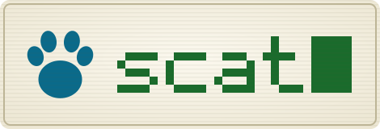
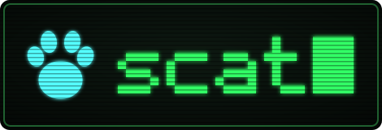

watch and manage your servers over SSH, from the terminal.
scat 0.2.2 · released · release notes
$ curl -fsSL https://raw.githubusercontent.com/d3m0naz/scat/main/install.sh | bash
This installs scat 0.2.2 (released ).
The installer runs with the first bash in PATH, so Bash 5 is needed first, see “bash 5 or newer” below. It checks the SHA-256 of the release archive before it installs anything, puts scat into ~/.local/share/scat-<version> and links ~/.local/bin/scat. If ~/.local/bin is not on your PATH, add it: export PATH="$HOME/.local/bin:$PATH". To install elsewhere, set SCAT_PREFIX. Releases and checksums are on the releases page.
Demo with made-up servers and numbers: the cursor picks a server, Enter opens its live metrics, Esc goes back.
scat is a Bash script that runs on the machine you work on. It is written for any system with Bash 5 or newer and the usual Unix tools. So far it has been run on macOS (Apple Silicon); Linux and FreeBSD as the machine running scat have not been tested yet. Check your version with bash --version.
| system | how to get Bash 5 |
|---|---|
| macOS | brew install bash, then put /opt/homebrew/bin first in PATH. The system /bin/bash is 3.2 and is not supported. |
| Linux | Usually installed already; otherwise apt install bash, dnf install bash or pacman -S bash. |
| FreeBSD / OPNsense | pkg install bash |
scat --check web1.settings.conf or with --theme.ssh -o BatchMode=yes.ssh, tput, stty, awk, sed, sort, mktemp, grep, pkill.| j / k, arrows | move |
| PgUp / PgDn | move one page |
| g / G, Home / End | top / bottom |
| Enter | open |
| a / e / d | add / edit / delete a server |
| J / K | move a server down / up |
| t | group headings on / off (this session) |
| s | ssh shell |
| p | processes |
| m | modules |
| x | snippets |
| c / m / p / n | processes: sort by CPU, memory, PID, name |
| K | processes: send SIGTERM (asks first) |
| r | refresh now |
| ? | help |
| q / Esc | back, quit on the list |
| Ctrl-C | quit |
The terminal needs at least 80×24. In a smaller window scat shows a short notice until the window is large enough again.
Your servers do not need Bash: scat only needs SSH access and a POSIX sh with awk, ps and df there. Tested live: Linux (Debian 13, arm64) and FreeBSD 15 (OPNsense), both with full metrics. macOS hosts work on a best-effort basis.